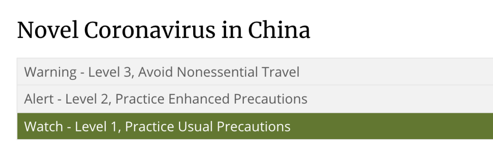
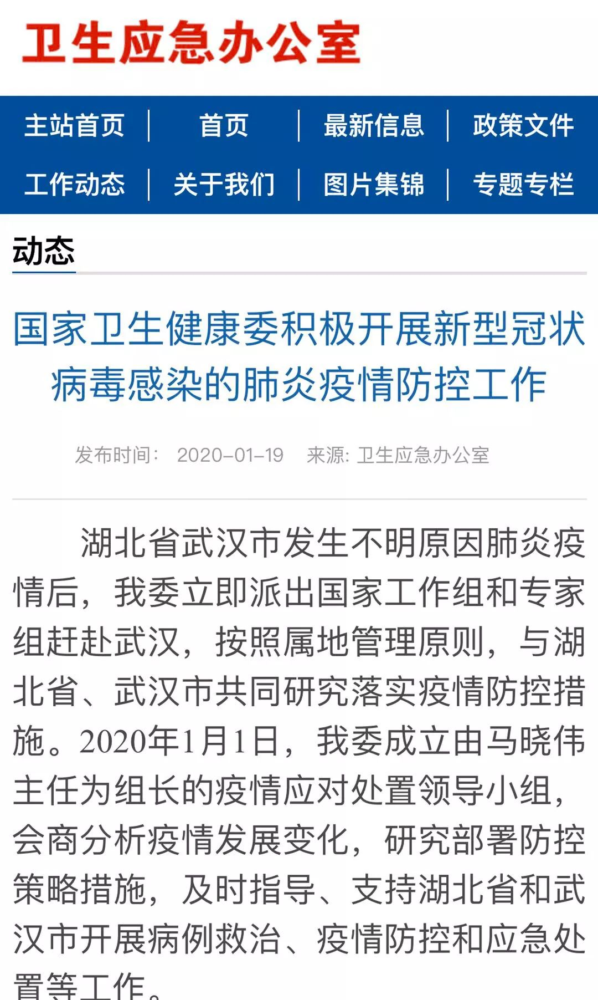
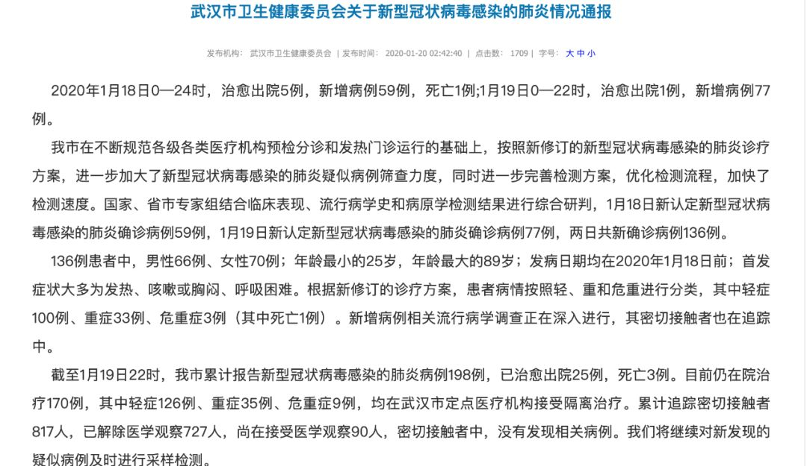
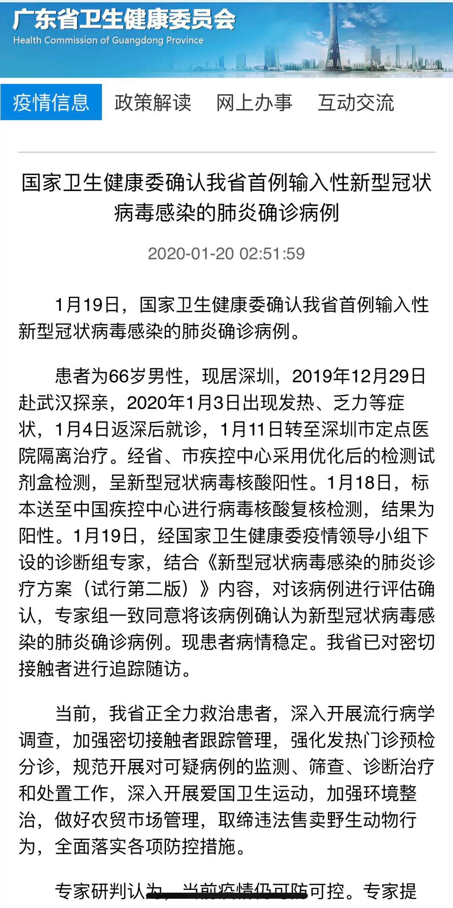
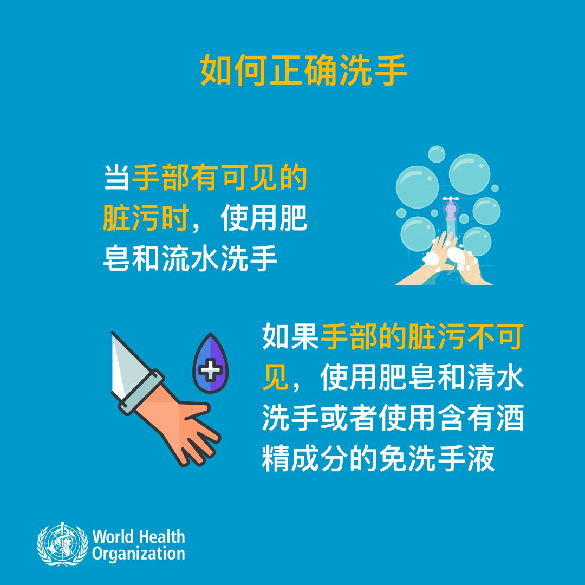
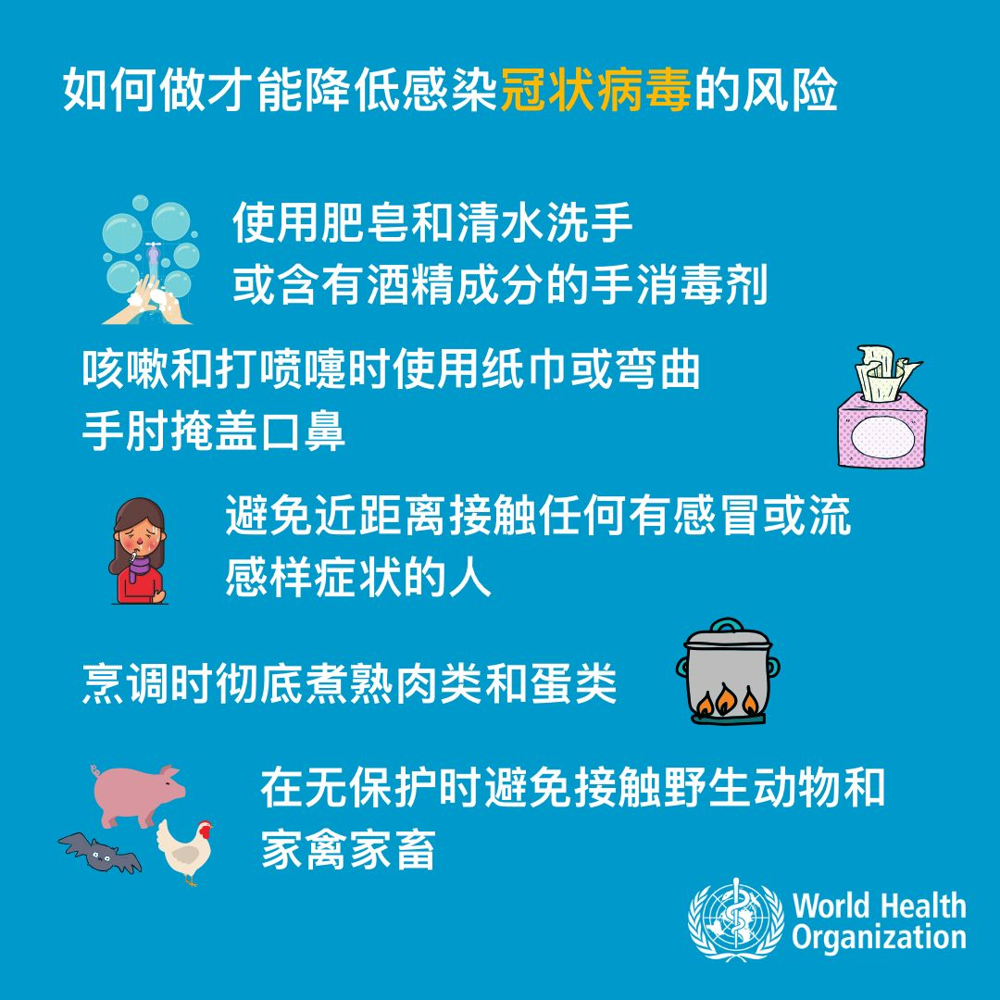

武汉肺炎1天新增17例，为何内地其他城市没有报告病例？
原文链接 备份链接 武汉肺炎新的确诊病例突然增加了。1月17日新增17例，16日新增4例。 泰国和日本出现三例确诊病例，中国香港、越南、新加坡等地出现了疑似病例。 但内地在武汉之外没有报告，很可能是其他地区没有对该病毒进行检测。这种 …


新型冠状病毒感染肺炎疫情扩大。武汉本地两天新增确诊136例，死亡1例，治愈出院6例。
北京大兴区新增2例，有武汉旅行史；广东深圳新增1例，曾到武汉探亲。这是内地首次在武汉之外的城市报告病例。
国家卫健委卫生应急办公室第一次发布关于武汉肺炎的信息，“专家研判认为，当前疫情仍可防可控”。
武汉疾控专家回答记者提问时也认为疫情可防可控；新型冠状病毒感染的肺炎总体是可治的。
武汉已实施出境离汉人员管控。美国CDC官网警戒级别仍停留在最初等的1级。

今天（1月20日）凌晨2点42分至2点51分，武汉卫健委官网、北京市大兴区卫健委官方微博、广东省卫健委官网分别发布最新的疫情。
1月18日0点至1月19日22点，武汉新增确诊病例136例，死亡1例，治愈出院6例；北京大兴区新增2例，有武汉旅行史；广东深圳新增1例，患者为66岁男性，2019年12月29日赴武汉探亲。
这也是中国内地首次在武汉之外的地区报告2019-nCoV肺炎。
昨天晚上，国家卫健委卫生应急办公室第一次发布关于武汉肺炎的信息，“专家研判认为，当前疫情仍可防可控。但新型冠状病毒传染来源尚未找到，疫情传播途径尚未完全掌握，病毒变异仍需严密监控。下一步，我委将加强部门协调联动，严格落实疫情防扩散措施。继续做好全国疫情防控工作，及时发现并有效处置疫情。”
上海市政府新闻办的官方微信“上海发布”昨天晚上8点半也发布消息，“上海高度重视新型冠状病毒感染的肺炎防控工作，……目前全市各类医疗机构已全面加强预检分诊和发热门诊的力量配置，规范开展对可疑病例的监测、筛查、诊断治疗和处置工作，保障市民健康和城市公共卫生安全”。
截至目前，中国内地共确诊201例2019-nCoV肺炎患者，死亡3例。海外确诊的病例仍然为泰国2例、日本1例，暂时没有新增。
中国香港特区疑似病例增至99例，但没有确认和2019-nCoV有关，其中80例已经出院。
而在美国疾病控制与预防中心（CDC）官网，针对2019-nCoV的警戒级别仍停留在1级，即采取通常的预防措施（按轻重程度共分3级，其中2级为警戒，采取加强预防措施；3级为警告，避免不必要出行）。

中国内地共确诊201例，死亡3例
根据卫生应急办发布的信息，1月8日初步确认此次疫情的病原为新型冠状病毒（1月12日，世界卫生组织将其命名为“2019新型冠状病毒”，简称2019-nCoV）后，卫健委召开全国卫生健康系统电视电话会议，对全国疫情防控工作进行全面部署。印发病例诊疗、防控方案（涵盖监测、流调、密切接触者管理、实验室检测等内容），在全国建立了“日报告、零报告”制度。下发新型冠状病毒核酸检测试剂盒，要求各地加强检测，全力救治患者，及时发布确诊病例及疫情防控信息。并陆续向全国各省派出工作组，指导做好疫情防控相关工作。

根据今天凌晨武汉卫健委发布的情况通报，2020年1月18日0—24时，治愈出院5例，新增病例59例，死亡1例；1月19日0—22时，治愈出院1例，新增病例77例。两日共新确诊136例。
136例患者中，男性66例、女性70例；年龄最小的25岁，年龄最大的89岁；发病日期均在2020年1月18日前；首发症状大多为发热、咳嗽或胸闷、呼吸困难。根据新修订的诊疗方案，患者病情按照轻、重和危重进行分类，其中轻症100例、重症33例、危重症3例（其中死亡1例）。新增病例相关流行病学调查正在深入进行，其密切接触者也在追踪中。
截至1月19日22时，武汉累计报告新型冠状病毒感染的肺炎病例198例，已治愈出院25例，死亡3例。目前仍在院治疗170例，其中轻症126例、重症35例、危重症9例，均在武汉市定点医疗机构接受隔离治疗。
累计追踪密切接触者 817人，已解除医学观察727人，尚在接受医学观察90人，密切接触者中，没有发现相关病例。

北京大兴区卫健委发布的信息称，大兴区医疗机构接诊的两名有武汉旅行史的发热患者，确认为新型冠状病毒感染的肺炎病例。两名患者已在定点医院接受隔离治疗，目前无呼吸道症状，病情平稳。大兴区已对密切接触者开展医学观察，目前无发热等异常情况。

广东卫健委发布的信息如下：
1月19日，国家卫生健康委确认我省首例输入性新型冠状病毒感染的肺炎确诊病例。
患者为66岁男性，现居深圳，2019年12月29日赴武汉探亲，2020年1月3日出现发热、乏力等症状，1月4日返深后就诊，1月11日转至深圳市定点医院隔离治疗。
经省、市疾控中心采用优化后的检测试剂盒检测，呈新型冠状病毒核酸阳性。1月18日，标本送至中国疾控中心进行病毒核酸复核检测，结果为阳性。1月19日，经国家卫生健康委疫情领导小组下设的诊断组专家，结合《新型冠状病毒感染的肺炎诊疗方案（试行第二版）》内容，对该病例进行评估确认，专家组一致同意将该病例确认为新型冠状病毒感染的肺炎确诊病例。
现患者病情稳定。我省已对密切接触者进行追踪随访。当前，我省正全力救治患者，深入开展流行病学调查，加强密切接触者跟踪管理，强化发热门诊预检分诊，规范开展对可疑病例的监测、筛查、诊断治疗和处置工作，深入开展爱国卫生运动，加强环境整治，做好农贸市场管理，取缔违法售卖野生动物行为，全面落实各项防控措施。

武汉疾控专家就肺炎防控答记者问
1月19日，武汉市疾控专家及市领导针对武汉市新型冠状病毒感染的肺炎综合防控回答了记者提问。
武汉市疾病预防控制中心主任、主任医师李刚在回答问题“疫情可防可控吗？”时说：随着各项防控措施的实施与落实，疫情是可防可控的。病例中多数以轻症为主。
湖北省医疗组专家、武汉市金银潭医院副院长、主任医师黄朝林回答问题“病人可治吗？”时说：国家先后派出5名呼吸内科、感染科专家，与湖北省26名省、市医疗专家组成联合医疗救治专家组，采取轮班制，24小时值守市定点医院，负责对病例进行指导和会诊，参与危重症病例的医疗救治工作。同时，从全市抽调一批医疗骨干支援市定点医院，全力以赴救治患者。新型冠状病毒感染的肺炎总体是可治的。
武汉副市长陈邂馨回答“防范疫情扩散的措施”时，提到武汉已实施出境离汉人员管控，自1月14日起至18日，共开展体温检测近30万人次，发现16名发热人员，均已排除阳性病例。
WHO推荐的2019-nCoV防护小贴士
2019-nCoV肺炎疫情扩大，而接下来正是春运高峰，根据国新办的预测， 2020年春运期间，中国旅客发送量将达到约30亿人次。
春节外出如何预防新型冠状病毒？WHO推荐了2019-nCoV防护小贴士，复旦大学附属华山医院感染科进行了翻译。




△ 图片来源：WHO、华山感染
王吉陆|撰稿
微信号：wangjilu006


带量采购现场直击：最高降价98%，有药企老总戏称“带着刀子来拼了”

我们尊重原创版权，未经允许请勿转载。
授权转载
郑琪 微信号: 1281949389
商务合作
上海：leslee 13916263824
北京：Jessie 13911125922
线索爆料、意见反馈，加入核心读者社群
请扫码联系健闻君

让朋友们看到你也在看
↓↓↓
原文链接 备份链接 武汉肺炎新的确诊病例突然增加了。1月17日新增17例，16日新增4例。 泰国和日本出现三例确诊病例，中国香港、越南、新加坡等地出现了疑似病例。 但内地在武汉之外没有报告，很可能是其他地区没有对该病毒进行检测。这种 …
原文链接 备份链接 【财新网】（驻香港记者 王端）武汉新型冠状病毒肺炎患者有急剧增加趋势。 1月20日凌晨，武汉卫健委方面更新的数据显示，1月18日和19日两日共新增136名确诊患者。其中，18日增59人，19日增77人。武汉患者共198 …
原文链接 备份链接 2019年末，一场“不明原因”肺炎袭击湖北武汉。它由一种新型冠状病毒导致，而“冠状病毒”一词，唤醒了人们对16年前另一场影响深远的“不明原因肺炎”的记忆。中国的疾控系统再度面临检验。 2020年1月14日，世界卫生组 …
原文链接 备份链接 武汉卫健委最新通报，“不明原因肺炎”已排除SARS和MERS，但病原体仍未明确。 武汉患者已增至59例，重症7例，均在接受隔离治疗，无死亡病例。 香港特区等地加强了对来自武汉人员的监测，香港每日公布疑似案例，最新 …
原文链接 备份链接 共27例病例，大多是武汉华南海鲜城经营户。7例病情危重，其余病情可控，有2例病情好转拟近期出院。 不明原因肺炎，是2003年SARS事件后，对SARS病例和人禽流感病例及其它传染性呼吸道疾病监测中用的概念。 …